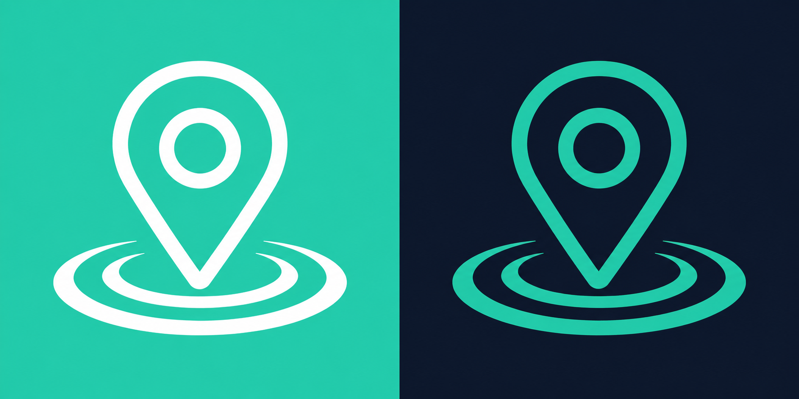

Een compacte vergelijking voor evenementenradar.nl — niet een nieuw logo, maar drie manieren waarop het bestaande merk een product kan dragen.
A — Quiet clarity
vertrouwen

evenementenradar.nlOntdek wat er bij jou in de buurt gebeurt
Zoek in jouw buurt
Wat speelt er om de hoek?
Vandaag · Utrecht, 5 km rondom jou
Alles
Muziek
Markt
Voor kinderen
14JUN
De Nacht van de Stad
Podium, plein & straat · Utrecht
Vandaag · 19:30
Hypothese: wit laat het event zelf spreken en maakt zoeken rustig. Trade-off: de merkherkenning leunt op de kleine, spaarzame turquoise momenten.
B — Night radar
herkenning
evenementenradar.nlOntdek wat er bij jou in de buurt gebeurt
Zoek een evenement
Vanavond in de stad
Utrecht · dichtbij geselecteerd
In de buurt
Muziek
Eten & drinken
14JUN
De Nacht van de Stad
Podium, plein & straat · Utrecht
Vandaag · 19:30
Hypothese: een donker frame maakt de radar direct eigen en herkenbaar. Trade-off: eventbeelden en langere sessies voelen zwaarder aan.
C — Local layer
nabijheid
evenementenradar.nlOntdek wat er bij jou in de buurt gebeurt
Zoek op plaats of type
Jouw lokale laag
Alles dichtbij · Utrecht centrum
Dit weekend
Muziek
Markt
Gratis
14JUN
De Nacht van de Stad
Podium, plein & straat · Utrecht
Vandaag · 19:30
Hypothese: mint zones geven filters en locatie een zachte, lokale context. Trade-off: de interface wordt warmer, maar minder neutraal voor beeldrijke feeds.